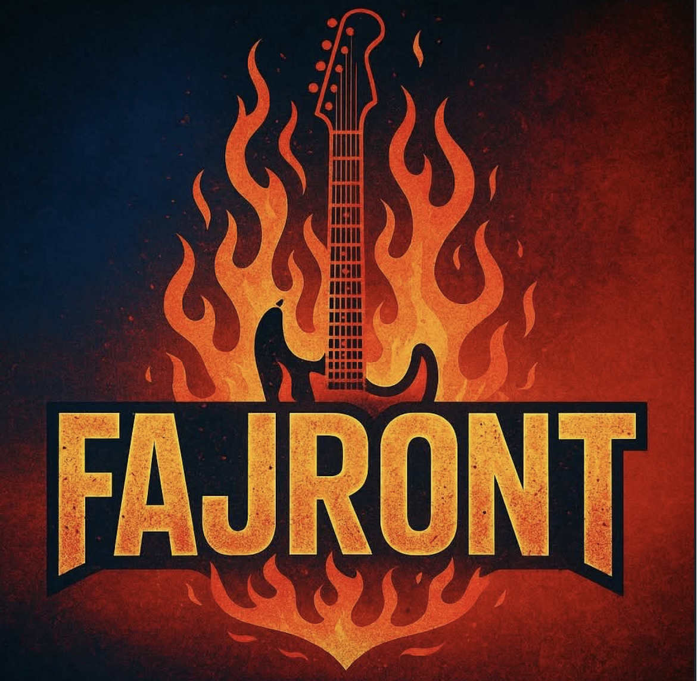
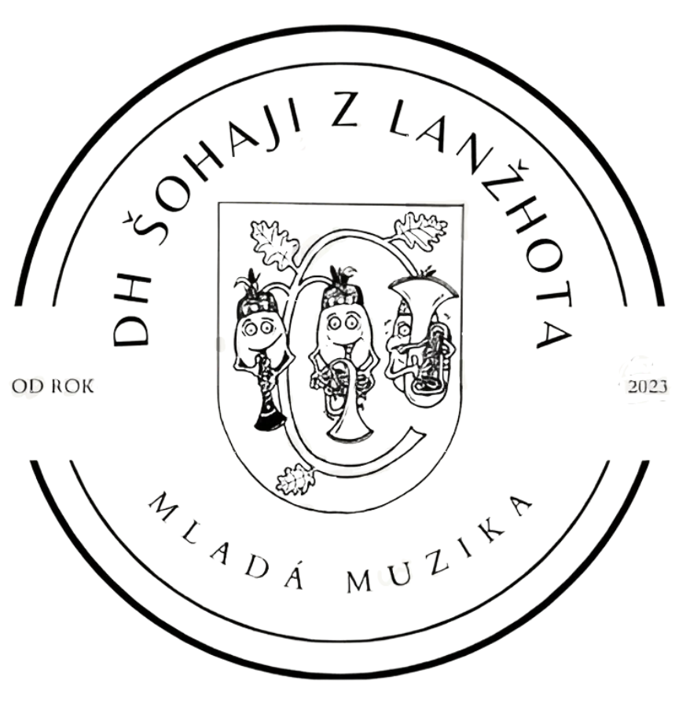

Hledáte mladou energii a ty největší české i slovenské hity na jednom pódiu? Kapela Fajront, pod vedením Marka Kučery, vrací do hry pecky od Kabátů, Chinaski nebo Mandrage v moderním a dravém podání.

DH Šohaji vznikli v srdci malebného Lanžhota. Naše sestava spojuje dravé mládí se zkušeností ostřílených muzikantů. Hrajeme klasickou českou a moravskou dechovku, ale nebojíme se ani modernějších aranží, které rozproudí krev v žilách každému posluchači.